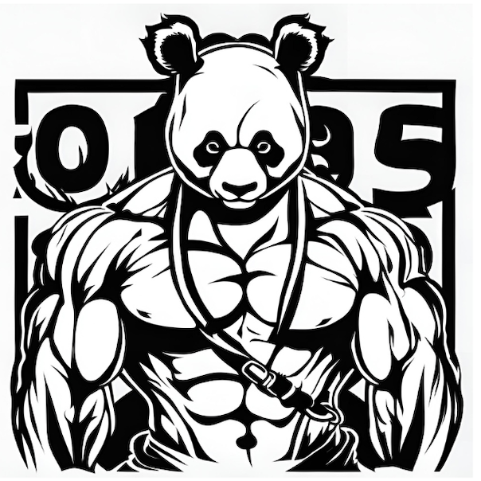

ABOUT
私について
ハッカーに憧れてプログラミングに興味を持ち、コンピュータサイエンスを大学で学ぶことを決意。コンピュータサイエンスを学ぶうちに様々な仕組みを知ること、作ることの楽しさに気づく。現在は、ソフトウェアエンジニアを目指して学習中。
現在、取り組んでいること
作りたいアプリがあるのですが、作成するための技術力が足りていないので、アプリ開発を学習中です。
アプリ開発の学習のためにRecursionというサービスを契約して学習に取り組んでいます。
スキルについて
よく使う技術
Python
そのほか触ったことのある技術
HTML
CSS
JavaScript
PHP
Ruby
Java
C
TypeScript
Rails
MySQL
SQLite
Git
Docker
AWS
興味のある技術
Go
Rust
React
IT技術について
普段から使用しているもの(アプリなど)がどういう仕組みでできているのか、どう現実で実装されているかということを知ることにとても面白みを感じます。技術を使うことを仕事をすることでもっと技術を知りたいです。